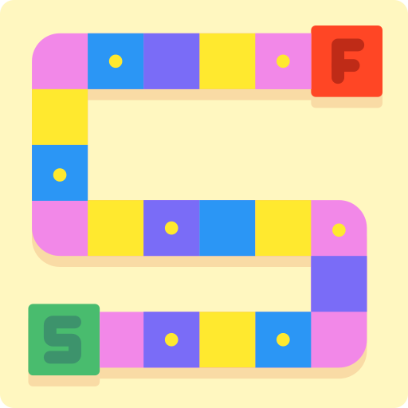
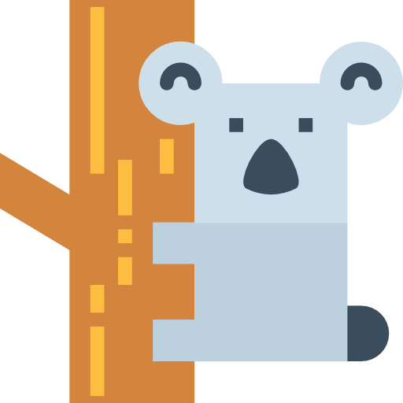
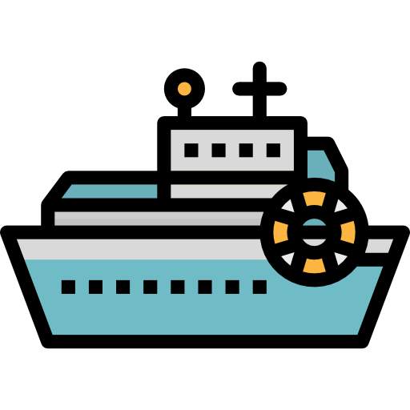

Data urodzenia:
30.07.1993
Data urodzenia:
30.07.1993
 E-mail:
E-mail:
 Telefon:
Telefon:O mnie
Mam na imię Szymon i moją pasją jest programowanie. Od 2 lat zajmuję się programowaniem w PHP, ale również mam kontakt z innymi językami takimi jak JavaScript, HTML, CSS. Programowaniem zainteresowałem się studiując informatykę na Uniwersytecie Jana Kochanowskiego w Kielcach. W codziennej pracy staram się przede wszystkim czerpać przyjemność z tego co robię oraz poszerzać swoje kwalifikacje i umiejętności w dziedzinie programowania.
Języki
- Polski - Ojczysty
- Angielski - komunikatywny
Doświadczenie
-
01.02.2020 - obecnie - Sysconfig (Link)
- Programista (PHP, LUA, Javascript, postgrSQL, HTML i CSS).
- Projektowanie i programowanie stron internetowych.
- Rozwój systemów operacyjnych, systemów zarządzania bazami danych, sterowników.
- Znajdowanie i usuwanie błędów pojawiających się podczas pisania kodu.
- Testowanie i ulepszanie kodu.
- Pomoc w usługach programistycznych w zakresie technologii webowych.
- Konfiguracja, rozwój i wsparcie oprogramowania VoIP (w tym FreeSWITCH i Kamalio).
- Zdalna konfiguracja serwerów i innych urządzeń sieciowych (w tym routerów, firewalli i switchy) związanych ze świadczeniem usług VoIP.
- Utrzymanie serwerów i innego sprzętu sieciowego.
-
01.2019 - 12.2019 - Wojewódzki Urząd Pracy w Kielcach (Link)
- Pomoc informatyczna.
- Serwisowanie i naprawa sprzętu komputerowego.
- Obsługa oprogramowania biurowego.
- Budowa sieci logicznej i fizyczne.
- Instalacja materiałów eksploatacyjnych do urządzeń biurowych.
- Archiwizacja danych.
-
11.2017 – 05.2018 - EBS sp Z.O.O (Link)
- Pomoc informatyczna.
- Serwisowanie i naprawa sprzętu komputerowego.
- Praca w programie AutoCAD.
- Obsługa oprogramowania biurowego.
- Instalacja materiałów eksploatacyjnych do urządzeń biurowych.
- Archiwizacja danych.
Wyszktałcenie
- 2014–2018 - Uniwersytet Jana Kochanowskiego w Kielcach Kierunek: Informatyka - Inżynier
- 2009-2013 - Zespół Szkół Nr 2 w Chęcinach Technik informatyk
Zainteresowania
-
Grafika
Chociaż nie mam dużej wiedzy o grafice to zawsze lubiłem zabawe w Adobe PhotoShop
-

Gry planszowe
Wieczór z Monopoly lub inną grę planszową z przyjaciółmi lub rodziną, to zawsze dobry pomysł na spędzenie wolnego czasu.
-
Gry komputerowe
Odkąd pamiętam lubiłem gry komputerowe. Po ciężkim dniu warto odprężyć się w wirtualnym świecie.
-
Sport
Siłownia, pływanie, piłka nożna, siatkówka to moje ulubione dyscypliny sportowe. Sport jako forma odpoczynku to świetny pomysł.
-

Zwierzęta
Zawsze kochałem wszystkie zwierzęta. Jestem szczęśliwym posiadacze dwóch psów i kota.
-

Podróże
Na świećie zawsze jest coś co warto zobaczyć. Piękne widoki zawsze mnie inspirują. Poznawanie nowych kultur pozwala także poznać lepiej siebie.